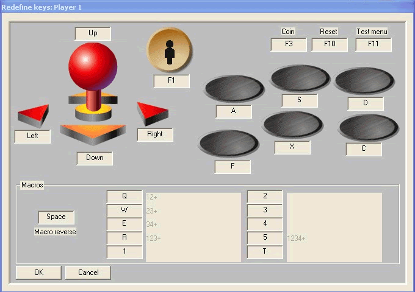

WinKawaks 从零到一：30 分钟把街机模拟器跑起来
下载解压、放 ROM、启动扫描、配按键——跟着五步走完，你的 WinKawaks 就能跑出第一款游戏。文章末尾还整理了三个新手最容易翻车的卡点和解法。
这篇教程结束时，你将能够：下载并运行 WinKawaks、正确放置 ROM 文件、成功载入一款街机游戏、配置好键盘或手柄按键。全程五步，中间遇到卡点直接跳到文末故障排查。
准备工作：你需要知道什么
WinKawaks 是街机模拟器圈的老牌选手，它的官网维护着最新版本和适配说明，专门模拟 Capcom CPS-1 / CPS-2 和 SNK Neo Geo 三种基板——拳皇 97、街头霸王 2、合金弹头、恐龙快打这些经典街机都是它的菜。
- 运行平台：Windows 7 / 10 / 11，32 位 64 位都行
- 前置条件：一份 WinKawaks 程序包 + 至少一款游戏的 ROM 文件
- 不需要：安装过程、管理员权限、联网安装依赖——解压即用
第一步：下载并解压 WinKawaks
先拿到程序本体。安装包从kawaks下载拿，建议解压到一个没有中文字符的纯英文路径——比如 D:\Games\WinKawaks。中文路径在某些老版本 Kawaks 上会导致 ROM 扫描失败，这里直接规避掉。
解压后的目录结构大概这样：
WinKawaks/
├── Winkawaks.exe ← 双击这个启动
├── Winkawaks.dll
├── roms/ ← 游戏 ROM 放这里
├── saves/ ← 存档自动存在这
├── winkawaks.ini ← 主配置文件
└── ...这里注意：解压完先别急着删压缩包，等确认能正常启动再清理不迟。如果双击 exe 没反应，可以右键以管理员身份运行试试。

第二步：把 ROM 文件放进 roms 目录
这是新手最容易犯迷糊的一步——我单独拎出来讲。
ROM 是什么：街机游戏主板上的只读芯片转储文件，WinKawaks 本身不带任何游戏，所有内容都来自 ROM。每款游戏对应一个 ZIP 包，ZIP 内部是 .bin、.prg、.p1 之类的原始芯片文件。
关键纪律：
- ROM 文件保持 ZIP 压缩包原样，不要解压。解压后的散文件 Kawaks 不认，扫不出来
- 直接把 ZIP 丢进
roms/文件夹根目录就行，不用按基板分子目录——Kawaks 会自动识别 - 一次放一两个 ROM 先测试，成功后再批量导入，免得一大片扫不出来不知道是哪个出了问题
放好之后，roms/ 目录长这样：
roms/
├── kof97.zip ← 拳皇 97
├── sf2.zip ← 街头霸王 2
└── mslug.zip ← 合金弹头第三步：启动模拟器，扫描 ROM
双击 Winkawaks.exe，主界面出来后：
- 点击顶部菜单栏 File → Load Game
- 在弹出的载入对话框左下角，点击 Rescan all 按钮——模拟器会遍历整个
roms/目录检查 ROM 完整性 - 勾选右上角的 Only Available（只显示可用的），这样列表里只剩那些能直接跑的游戏，一堆灰色的"不支持"条目眼不见心不烦
扫完之后列表里出现你的游戏了吗？出现了就进入第四步；一个都没出来的话，跳到文末「常见卡点一」。
第四步：载入第一款游戏
在游戏列表里双击你想玩的那一款，比如拳皇 97——屏幕黑一下，然后游戏画面就出来了。第一次载入可能需要几秒钟，ROM 越大约慢，正常现象。
载入成功后先别着急按键盘——还没投币！WinKawaks 模拟的是真实街机框体，要先投币再开始，默认按键是：
| 功能 | 默认键 |
|---|---|
| 投币 Coin | 数字键 5 |
| 开始 Start | 数字键 1 |
| 方向 | W A S D |
| 拳脚按钮 | J K L |
按 5 投币，按 1 开始——应该能看到角色站在选人界面了。恭喜，你的第一款街机游戏跑起来了。
第五步：配置按键（手柄玩家看这里）
默认键位不一定顺手，或者你插了手柄想用手柄玩——改按键在 Game → Redefine Keys → Player 1 里。

操作流程：
- 点击你想改的那一行，比如 Up（上方向）
- 这一行会变成 "Press any key to remap..." 的状态
- 按下你想绑定的按键或手柄按钮
- 成功后那一行显示出新的键值
- 全部改完点 OK 保存
如果你用手柄但按了没反应——别慌，先到 Windows 控制面板「设备和打印机 → 游戏控制器」里测试一下按键亮不亮，确认系统层能识别。系统能识别但 Kawaks 里不识别的话，多半是 DirectInput 的问题，重启模拟器或换个 USB 口通常能解决。手柄适配的特殊说明在kawaks文档里还有更细的分类表。
记得存配置：改完按键后去 Game → Save Current Configuration As Default 保存为默认，否则每次重启可能又重置回默认键位。
常见卡点
卡点一：Rescan all 后列表空的
扫完一个游戏都没出来，按这个顺序查：
- ROM ZIP 解压了吗？ 解开压缩包散着放 = 白放，重新打包回 ZIP 或直接下载压缩好的 ROM
- ROM 放在正确位置了吗？ 必须在
roms/目录根层级，不要嵌套子目录 - ROM 集版本对得上吗？ Kawaks 只认 CPS1/CPS2/Neo Geo 三种基板的 ROM，MAME 的其他基板 ROM 放进来也没用
- 路径有中文吗？ 检查 WinKawaks 整个安装路径，有中文的话挪到纯英文目录
卡点二：启动游戏黑屏或花屏
大概率是视频模式的问题。改 winkawaks.ini 里的 Videomode 参数：
- 关闭模拟器，用记事本打开根目录的
winkawaks.ini - 找到
[WinKawaks]段里的Videomode=行 - 默认是 1（Hardware 硬件加速），改成 2（Software 软件渲染）试试
- 如果之前是全屏黑，把
FullScreen=1改成FullScreen=0强制窗口化启动
保存后重启模拟器，大概率能进。
卡点三：手柄插了但按不动
按「系统识别 → 模拟器识别 → 按键映射 → 冲突排查」四步查，别跳步：
- 控制面板里游戏控制器属性测试面板能亮 → Windows 识别 OK
- Kawaks Redefine Keys 窗口按手柄能抓到键值 → 模拟器识别 OK
- 游戏里按了没反应 → 检查是不是忘了投币开始、映射有没有保存
- 按一个按钮触发多个动作 → 回到 Redefine Keys 清理重复绑定
PS 手柄需要 Ds4Windows 模拟成 Xbox 手柄，Switch Pro 需要 BetterJoy 驱动，这两类老玩家常见的特殊手柄额外注意。
进阶一句话
等单机玩顺了，可以试试 Kaillera 联机对战——UDP 27888 端口放行（Windows 防火墙 + 路由器端口映射），就能让互联网上的朋友直连你的本地服务器一起打拳皇。折腾联机过程中用到的 ROM 清单和配置模板，我同步在了GitHub、Gitee 和 GitCode 三个仓库，方便国内不同网络环境的朋友各取所需。